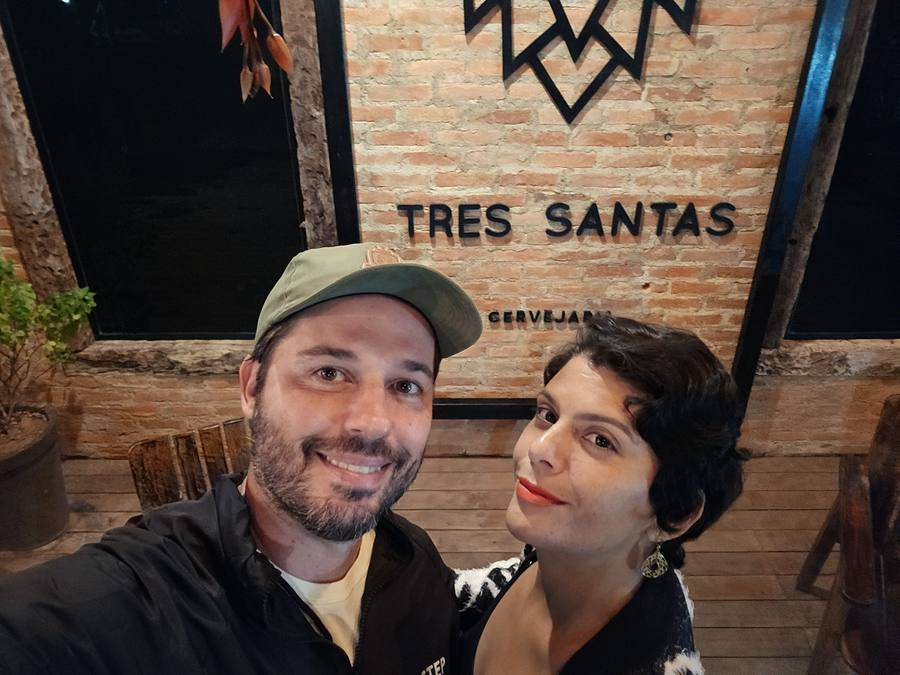
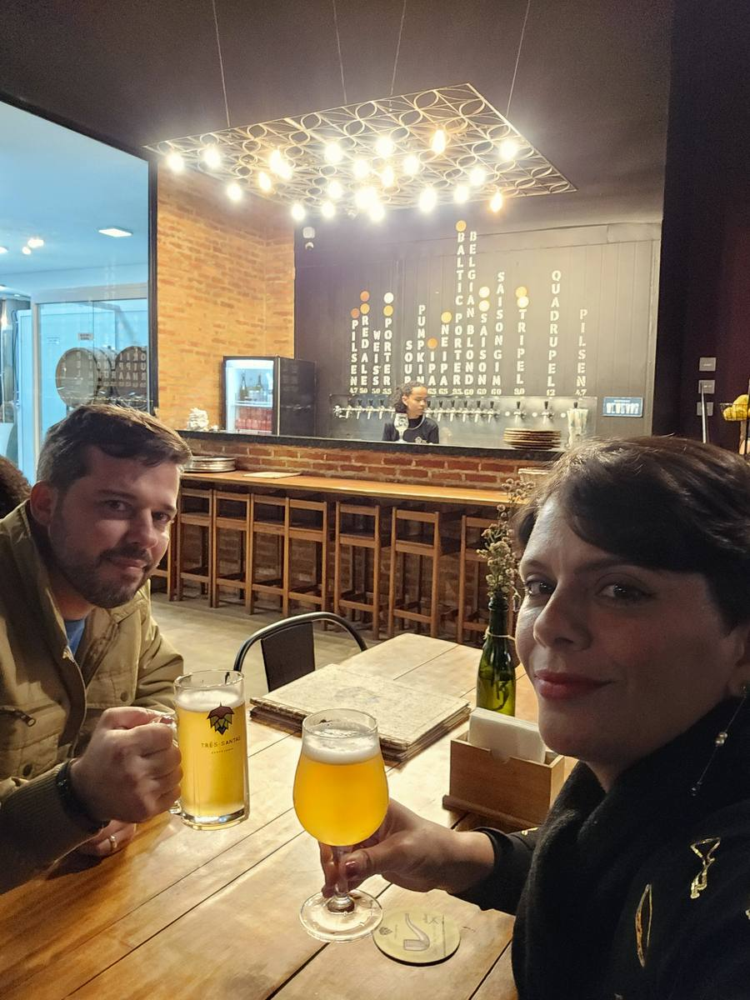
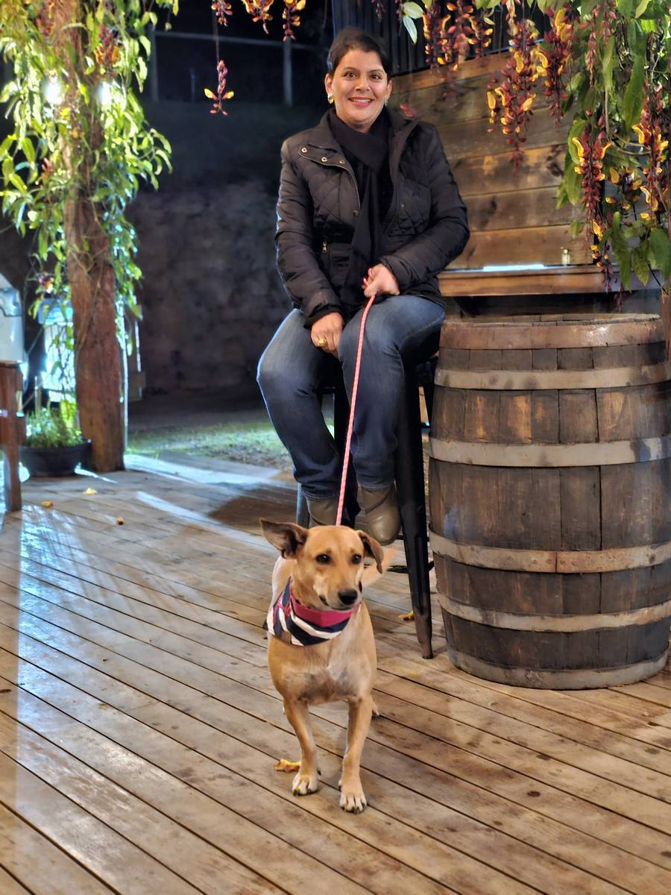
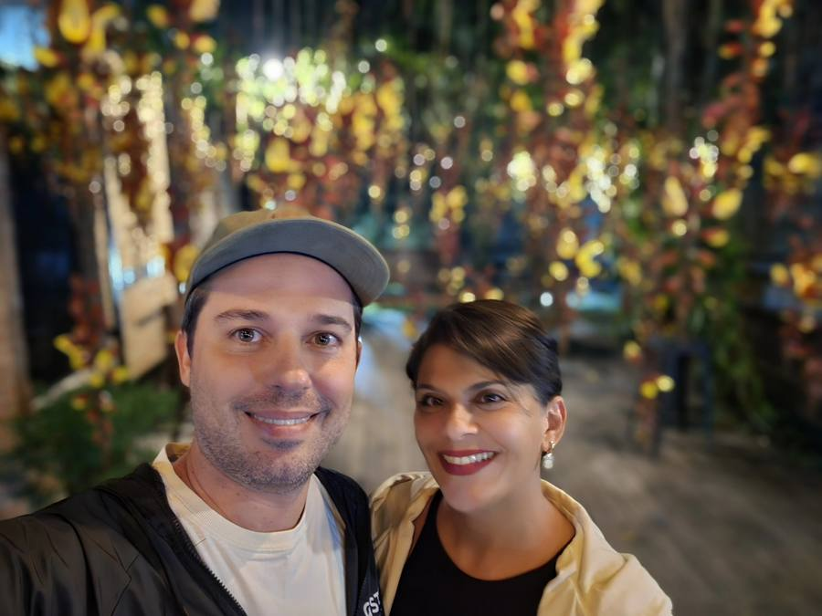

A melhor cervejaria do Brasil fica numa estrada de chão em Santa Teresa
Pela terceira vez seguida. A Cervejaria Três Santas, aqui do Circuito Caravaggio, foi eleita ontem a melhor cervejaria brewpub do Brasil no Brasil Beer Cup. Ninguém no país tinha conseguido três títulos seguidos nessa categoria — e ela é a única cervejaria capixaba a ter conquistado o primeiro.
O que aconteceu no sábado
A premiação foi em Florianópolis, no dia 12 de setembro, reunindo cervejarias do Brasil inteiro e de vários países da América Latina. A Três Santas saiu de lá com:
- O título de Melhor Cervejaria do Brasil na categoria Brewpub, pelo terceiro ano consecutivo — 2024, 2025 e 2026
- 24 medalhas: 6 de ouro, 10 de prata e 8 de bronze
- O Best of Show com a cerveja Nina, prêmio disputado apenas entre as medalhas de ouro do concurso

A curva que esses números desenham
Título repetido impressiona, mas o que me chamou atenção foi outra coisa. Olha a sequência de medalhas nos três anos:
2024: 9 medalhas. 2025: 15. 2026: 24.
Não é uma cervejaria defendendo um título. É uma cervejaria que está ficando melhor a cada ano, e com folga crescente. E em cada uma das três edições ela levou também o Best of Show — a Grisette em 2024, O Julgamento Selvagem em 2025 e agora a Nina.
Isso é difícil de fazer por acaso uma vez. Três vezes seguidas é método.
Por que "brewpub" muda o sentido do prêmio
Brewpub é a categoria das cervejarias pequenas que vendem a maior parte do que produzem no próprio estabelecimento. Ou seja: não é cerveja que você acha no mercado da esquina. Para beber a melhor cerveja do Brasil, você precisa subir a serra e ir até lá.
É por isso que esse título não é só uma conquista da cervejaria. É uma conquista de endereço. A produção da Três Santas gira em torno de 45 mil litros por ano — pequena, do tamanho de um brewpub mesmo — e boa parte dela é servida no balcão, no Circuito Caravaggio, área rural de Santa Teresa.

Três sócios, uma ideia de 2010 e uma abertura em maio de 2020
A cervejaria é tocada por Juca Lima, Marjori Crispim e Janice Lima. A ideia nasceu por volta de 2010: ter um dia um empreendimento na zona rural capixaba, voltado a receber gente. Juca, que era professor universitário, começou fazendo pão e cerveja por hobby. Em 2018 os sócios largaram as carreiras e vieram construir a cervejaria em Santa Teresa.
E aí vem o detalhe que eu acho o mais corajoso da história toda: a Três Santas abriu as portas em maio de 2020. No meio da pandemia, num negócio cujo modelo inteiro depende de gente sentada no balcão.
Quatro anos depois disso, era a melhor do Brasil. Seis anos depois, é tricampeã.
A Três Santas não nasceu num vazio
É fácil olhar para os três títulos e achar que a cerveja chegou ao Caravaggio em 2020, junto com ela. Não foi bem assim.
Cinco anos antes, em 2015, a Cervejaria Zamprogno já tinha aberto as portas aqui no circuito — a primeira cervejaria artesanal de Santa Teresa. Fica perto da Rampa de Voo Livre e é mais que cervejaria: tem restaurante italiano, grelhados e acomodação, num modelo que já apontava para onde a região ia. Foi ela que provou, antes de todo mundo, que dava para fazer cerveja boa numa estrada de terra capixaba e que havia gente disposta a vir buscar.
Hoje o roteiro cervejeiro da cidade tem ainda a Cervejaria Teresense, ali perto do pórtico, e o Ristorante Romanha, que funciona como cantina, vinícola e microcervejaria ao mesmo tempo. Some a isso as vinícolas antigas e a Casa dos Espumantes — que faz o único espumante de jabuticaba pelo método champenoise que eu conheço — e você entende que não existe uma estrela isolada aqui. Existe um ecossistema.
E isso vale para o estado inteiro: em edições anteriores do mesmo concurso, outras capixabas subiram ao pódio, como Marlin Azul, Três Torres, Piwo e Aurora. O Espírito Santo virou terra de cerveja boa, e a serra é o centro disso.
Por que eu insisto nesse ponto? Porque uma região que depende de um único empreendimento é frágil. Uma região com dez motivos para a pessoa subir a serra é outra coisa — e é essa a diferença entre lugar da moda e lugar que se consolida.
O que isso tem a ver com terreno
Tudo, e eu explico sem rodeio.
Quando eu digo que o Circuito Caravaggio está se consolidando como destino, não é frase de corretor. É uma coisa que se mede. Uma cervejaria que só vende no próprio balcão, numa estrada rural, ganhar três títulos nacionais seguidos significa que existe gente suficiente disposta a dirigir até aqui para sustentar esse modelo. E significa que cada novo título traz mais gente ainda.
Esse é o tipo de movimento que aparece no preço do metro quadrado alguns anos depois, não no mês seguinte. Quem comprou terreno no Caravaggio em 2020, quando a Três Santas estava abrindo as portas numa pandemia, comprou por um preço que hoje não existe mais.
E olha que a cervejaria não está sozinha: o mesmo circuito tem vinícolas centenárias, cafés coloniais, restaurantes e pousadas, com a Três Santas entre eles. Cada empreendimento que se destaca puxa os outros junto.
Se for subir, sobe com calma
Um conselho prático de quem mora aqui: a Três Santas fica em estrada rural, e o movimento cresceu muito depois dos títulos. Vale conferir o horário de funcionamento antes de ir, principalmente fora de fim de semana, e ir com tempo — não é programa de passar correndo. A graça é sentar, provar e conversar.

E se, entre uma cerveja e outra, você olhar para as encostas em volta e se pegar pensando "moraria aqui" — é mais ou menos assim que começa. Fala comigo que eu te mostro o que tem disponível.

Quer conhecer os terrenos disponíveis no Circuito Caravaggio, a poucos minutos da Três Santas?
Falar com a Milla no WhatsAppO resultado de 2026 (tricampeonato, 24 medalhas e Best of Show da Nina) é de 12 de setembro de 2026, informado pela cervejaria; por ser de ontem, ainda não há cobertura independente publicada. Os dados de 2024 (9 medalhas, Best of Show da Grisette, cerimônia em 26 de setembro) constam de moção da Câmara Municipal de Santa Teresa; os de 2025 (15 medalhas, Best of Show de "O Julgamento Selvagem", cerimônia em 9 de agosto) também. Histórico dos sócios, ano de abertura e volume de produção: entrevistas publicadas pela Agência Sebrae de Notícias e pela Folha Vitória. A Zamprogno como primeira cervejaria artesanal de Santa Teresa, em atividade desde 2015, e as menções à Cervejaria Teresense, ao Ristorante Romanha e à Casa dos Espumantes constam de reportagens do Tribuna Online e do perfil oficial da própria cervejaria. As demais capixabas premiadas em edições anteriores do Brasil Beer Cup foram citadas pela Agência Sebrae de Notícias. Fotos: arquivo pessoal. Horários e programação mudam — confirme antes de ir.